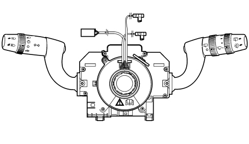
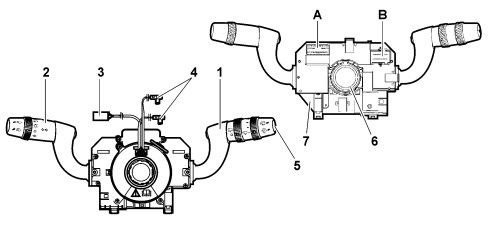
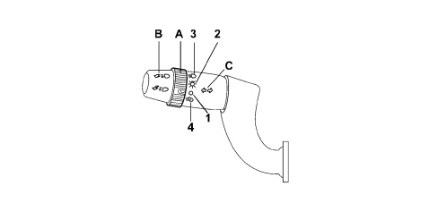
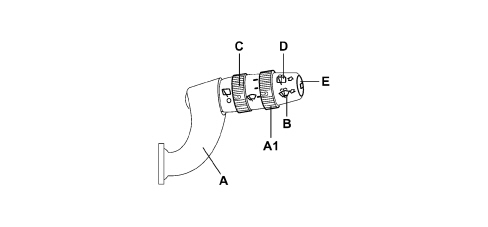
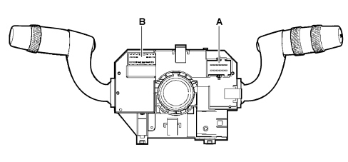
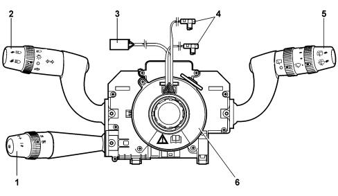

INTRODUCTION - WARNING AND MANOUEVRING SIGNALS
- Path
- Descriptions > 55 ELECTRICAL EQUIPMENT > 5550 WARNING AND MANOEUVRING INDICATORS > INTRODUCTION - WARNING AND MANOUEVRING SIGNALS
- Kind
- system description
- Applies to
- all engines; all production periods
- Interactive page
- https://sloeber94.github.io/elrnDB-fCrm/en/#/194002220
Applies to: all engines; all production periods
The steering column switch unit is illustrated in the diagram:

COMPOSITION
Casing
This is the supporting part of the steering column switch unit: it contains the electrical circuits and the switching and automatic release mechanisms which return the left (direction) lever to the rest position, following the realignment of the steering wheel, after a manoeuvre has been carried out.

1 - Right lever with controls for wiping and direction indicator functions
2 - Left lever with controls for exterior lights and direction indicators
3 - Horn/radio control cable
4 - Air Bag connectors
5- Control for Trip function
6 - Steering angle sensor
7 - Built in electronic module
A,B - Connectors
The component is designed to manage discreet commands, containing the control electronics for the windsreen and rearscreen wiper motors and for the two-way pump for washing the windscreen and the rearscreen and manages the A-BUS serial interface (if the rain/dusk sensor option is present). This aspect only regards the interface for the steering column switch unit module with the vehicle's electrical equipment, whilst the functions from the user's point of view remain unchanged.
Electronic module
This is the electronic control unit which controls the wiper functions and it is mechanically fastened to the casing to which it is connected electrically by means of special terminals.
It controls the operation of the:
1 - Windscreen wiper: sweep rate;
2 - Rearscreen wiper: sweep rate and control during reversing;
3 - Windscreen wiper function: smart washing;
4 - Rearscreen washer function: smart washing;
5 - Rain sensor: management of the signal from the sensor.
Light control lever

The list of controls for this lever is given below:
- Light selector
- Direction indicators and lane change
- Flasher switch
- Fixed main beams
The controls are activated by operating the lever in one of the following modes:
- Movement on the steering wheel plane in both directions and in two positions (the first unstable, the second stable)
- Pulling movement towards the driver in two positions (unstable)
- Rotation of ring nut in 3 or 4 positions
Light selector
The selector is a ring nut with 3 or 4 STABLE positions located at the end of the lever and it is activated by turning it along the axis of the lever (3 positions without a dusk sensor, 4 positions with a dusk sensor).
Position | Operation | Ring nut rotation | Control stability |
|---|---|---|---|
1* | Auto (automatic lighting) | clockwise | STABLE |
2 | OFF | rest position | STABLE |
3 | Positions | anti-clockwise | STABLE |
4 | Dipped headlamps | anti-clockwise | STABLE |
* only if a dusk sensor is fitted
Its task is to codify the commands: Side lights, Dipped headlamps, OFF and Auto in the 2 Light 1 and Light 2 signals to the Body Computer, in accordance with the table given below to make this information available at 2 wires.
Light selector | “Light 1” | “Light 2” |
|---|---|---|
1 - OFF | 1 | 1 |
2 - Lights | 0 | 1 |
3 - Lights | 0 | 0 |
4 - Auto | 1 | 0 |
Direction indicators and lane change
The command is produced by moving the lever on the steering wheel plane in both directions, upwards for the right direction indicators and downwards for the left ones.
The movement of the lever, for each direction of rotation, involves two distinct activation modes for the sam electrical contact, one UNSTABLE known as lane change and one STABLE known as direction change. The lane change function is activated with a lower angular travel compared with the one required for activating the direction change.
The unstable activation on the release of the lever reopens the electrical contact that has closed.
The stable activation requires an automatic release device that, when the manoeuvre has been carried out (rotation of the steering wheel in the same direction as the lever - attachment angle), restores the left lever to the rest position following the realignment of the steering wheel (rotation of the steering wheel in the opposite direction to the lever - release angle). There should be no slipping out of position following the automatic release.
Position | Operation | Lever movement | Control stability |
|---|---|---|---|
1 | Right direction indicators | upwards with position | STABLE |
2 | Right lane change | upwards without position | UNSTABLE |
3 | OFF | rest position | STABLE |
4 | Left lane change | Downwards without position | UNSTABLE |
5 | Left direction indicators | Downwards with position | STABLE |
Control for releasing direction indicators
The automatic mechanism for releasing the direction indicator is housed inside the steering column switch unit.
Headlamp flasher - Main beams fixed switch
The headlamp flasher control is produced by pulling the lever from the rest position towards the steering wheel crown and moving past the first position (flasher contact).
The operation is UNSTABLE as a result of which when the lever is released it should return to the rest position reopening the flasher contact.
The fixed main beam headlamps command is produced by pulling the lever in the same way as for the flasher but making it complete a greater travel, as far as the second position ("main beam headlamps" contact). The second section of the travel is recognized by the user because the mechanical resistance is greater.
In this case too, the operation is the UNSTABLE type (the return of the lever to the rest position reopens the main beam headlamps and flasher contacts in order)
Follow me function
This allows the space surrounding the vehicle to be lit up for a certain period of time.
It is activated by a command with the ignition key in the OFF position or extracted by pulling the lever towards the steering wheel and operating the lever within 2 minutes of the engine switching off.
Each time the lever is operated the length of time the lights stay on is prolonged by 30 seconds up to a maximum of 210 seconds; after this period the lights are switched off automatically.
Each time the lever is activated the time the lights are on increases.
To deactivate the function, keep the lever pulled towards the steering wheel for longer than 2 seconds.
Wiper control lever

A - Windscreen wiper control
A1 - Windscreen wiper intermittence adjustment/Rain sensor sensitivity
B - Windscreen washer control
C - Rear wiper control
D - Rear washer control
E - Trip computer control button
The list of controls for this lever is given below:
- Windscreen wiper control
- Windscreen wiper intermittence adjustment/Rain sensor sensitivity
- Windscreen washer control
- Rearscreen wiper control
- Rearscreen washer control
- Trip computer control button
The controls are activated by operating the lever in one of the following modes:
- Movement on steering wheel plane in both directions: 3 downward positions (stable), one upward position (unstable)
- Movement at right angles to the steering wheel plane in both directions, pulling and pushing (unstable)
- Ring nut rotation in 2 positions
- Ring nut rotation in 4 positions
- Top button
Windscreen wiper control
The windscreen wiper is operated by moving the lever along the plane of the steering wheel. There are 5 different operating positions including one unstable one.
Position | Operation | Lever movement | Control stability |
|---|---|---|---|
1 | Anti-panic | upwards | UNSTABLE |
2 | OFF | rest position | STABLE |
3 | Intermittent / Automatic | downwards 1st position | STABLE |
4 | Continuous 1st speed | downwards 2nd position | STABLE |
5 | Continuous 2nd speed | downwards 3rd position | STABLE |
During the movement of the lever it should not be possible to slip out of position.
Whilst switching from one position to another there should not be simultaneous closures of different circuits.
Windscreen wiper intermittence adjustment/Rain sensor sensitivity selector
The adjustment takes place by turning a ring nut at the end of the lever in 4 STABLE positions. 4 different pause times for the intermittent operation of the windscreen wiper correspond to these positions.
If a rain sensor is fitted, the positions correspond to the 4 rain sensor settings.
Position | Operation | Lever movement | Control stability |
|---|---|---|---|
1 | MAX pause (MIN setting) | rest position | STABLE |
2 | Medium - high pause (setting 2) | clockwise 1st position | STABLE |
3 | Medium - low pause (setting 3) | clockwise 2nd position | STABLE |
4 | MIN pause (MAX setting) | clockwise 3rd position | STABLE |
Windscreen washer control
The control for activating the two-way pump for washing the windscreen is produced by pulling the lever towards the steering wheel crown. The operation is UNSTABLE as a result of which when the lever is released it should return to the rest position reopening the contact.
Position | Operation | Lever movement | Control stability |
|---|---|---|---|
1 | OFF | rest position | STABLE |
2 | Windscreen washer | pull | UNSTABLE |
Rearscreen wiper control
The rearscreen wiper is controlled by rotating a ring nut halfway along the lever in 2 STABLE positions.
Position | Operation | Lever movement | Control stability |
|---|---|---|---|
1 | OFF | rest position | STABLE |
2 | Rearscreen wiper clockwise | pull | UNSTABLE |
Rearscreen washer control
The control for activating the two-way pump for washing the rearscreen is produced by pushing the lever towards the dashboard. The operation is UNSTABLE as a result of which when the lever is released it should return to the rest position reopening the contact.
Position | Operation | Lever movement | Control stability |
|---|---|---|---|
1 | OFF | rest position | STABLE |
2 | Rearscreen washer | push | UNSTABLE |
For further details,
See descriptions 5050 SCREEN WASHERS AND HEADLAMP WASH/WIPE
Button for TRIP function
Pressing the UNSTABLE button at the end of the lever controls the TRIP function in the control panel.
For further details,
See descriptions 5560 INSTRUMENTS
Clock spring
The clock spring is an integral part of the steering column switch unit and carries out the following functions:
- transmitting the rotation of the steering wheel to the automatic release mechanism located inside the casing;
- transferring the electrical signal for the controls on the steering wheel (horn and other optional services) and the Air Bag module.
Electrical connection to the steering wheel
A 12-way connector is used as follows:
- 2-way for the horn control;
- 4-way for the dual stage air bag module;
- 6-way for the additional controls on the steering wheel.
Steering angle sensor
The steering angle sensor is fitted on versions with ESP.
The sensor cannot be separated from the steering column switch unit.
If the sensor is defective, the complete steering column switch unit must be replaced.
On versions with ABS, if the steering column switch unit is replaced, the Parts Dept. will send a steering column switch unit complete with steering angle sensor. In this case do not connect the electrical connector.
STEERING COLUMN SWITCH UNIT PIN OUT
There are housings for the 3 connectors located at the rear for the electrical connection of the steering column switch unit to the vehicle wiring (+ 1 connector for the Cruise Control function, where fitted).
The rear view of the steering column switch unit is illustrated below:

The A-BUS output is connected to a serial communication BUS for the exchange of data with the rain sensor.
- Connector A
- Connector B/C
Connector A Pin Out (12-way)
Pin | Function |
|---|---|
1 | n.c. |
2 | A-bus serial line from rain sensor |
3 | Rearscreen wiper enablement positive from reverse |
4 | Negative from rearscreen open switch, preparation |
5 | Headlamp wish-wash signal |
6 | Negative from windscreen wiper motor |
7 | Power earth |
8 | Windscreen wiper second speed |
9 | Windscreen wiper first speed |
10 | Screen washer two-way pump positive |
11 | Windscreen wiper/two-way pump positive |
12 | Two-way pump positive for windscreen washer |
Connector B / C pin out (6+6 way)
Pin | Function |
|---|---|
1 | Rear wiper motor power supply |
2 | Negative signal from rearscreen wiper motor cam |
3 | High beam negative control |
4 | Flasher control/negative |
5 | Right direction indicators/parking lights control negative |
6 | Left direction indicators/parking lights control negative |
7 | LIGHT 1 control negative |
8 | LIGHT 2 control negative |
9 | Earth |
10 | Voice commands repetition to NIT negative (preparation) |
11 | Trip Computer Negative (to the NQS) |
12 | Rear wiper power supply |
Clock spring connector
The clock spring connection is as follows
Pin (dashboard cable) | Function |
|---|---|
1 | Horn control negative |
2 | n.c. |
3 | B - CAN B |
4 | B - CAN A |
5 | +15 |
6 | Ground signal (steering wheel node earth) |
7 | n.c. |
8 | n.c |
9 | AIR-BAG 2nd level Driver's side (+) |
10 | AIR-BAG 2nd level Driver's side (-) |
11 | AIR-BAG 1st level Driver's side (-) |
12 | AIR-BAG 1st level Driver's side (+) |
For further details of the controls managed directly by the steering (on versions where present),
See descriptions 5570 ACCESSORIES
Steering angle sensor pin out
The pin out for the Steering Angle Sensor is as follows:
Output | Function |
|---|---|
1 | +30 |
2 | - |
3 | C-CAN L |
4 | C-CAN L |
5 | +15 |
6 | GND (earth) |
7 | C-CAN H |
8 | C-CAN H |
Steering column switch unit with cruise control

- Cruise control system control lever
- Lighting/direction indicator control lever
- Horn/radio connectors
- Air Bag connectors
- Front/rear wiper control lever
- Clock spring
This is an electronically controlled device to assist steering which allows the vehicle to be driven at a speed above 30 km/h on long stretches with few variations at the desired speed without having to press the accelerator pedal.
The system is composed of a lever with the following functions:
- a ring nut switch for activating/deactivating the Cruise Control;
- a ring nut switch that memorises vehicle speed increase/decrease;
- a resume button that calls up a saved speed.
For further details of the controls managed directly by the steering (on versions where present),